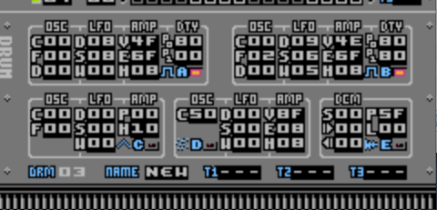

Drum Parameters
Let's have a look at the Drum Editor again:

As mentioned in the Drum Editor page, the Drum Editor is divided into 5 sub-groups and each one of these sub-groups contains the sound generating parameters for each of the NES's 5 voices for each Drum Patch.
Within those sub-groups, the parameters are further divided into sections which are mostly organised into vertical columns. Those columns are given 3-letter headings and the single parameters are given a single-letter ID. For example, the LFO Speed is under the LFO column, indicated by the letter 'S'
Many of the parameters are common between all Voices but there are some that are unique to particular Voices and some that perform slightly different functions depending on which Voice they are used on. We'll start off with Voice A as (along with Voice B which is identical) this is the most complicated one with the most parameters. I'll just give an overview of what the parameters do here, the Synthesis page explains what's going on in a bit more depth.
Voice A / Voice B Parameters (Square-wave)
Table Headings: Parameter is the three-letter sub-section name and the single-letter ID of each parameter of a Drum Voice. Function is a simple translation of the parameter name. Usage describes the functions of the parameters and values required to access those functions. Tx shows you the 3-letter ID that is used for the Trigger Parameters in the Auxiliary section of Drum Patches (see Drum Editor page for more detail).
| Parameter | Function | Usage | Tx A/B |
| OSC-C | Oscillator Coarse Offset |
| |
| 00 | Pitch is equal to Trigger Note |
| 01-4F | Positive semi-tone offset |
| 50-AF | Absolute note, 50 being the lowest pitch and AF being the highest |
| FF-B0 | Negative semi-tone offset (FF = -1) |
|
AOC
BOC |
| OSC-F | Oscillator Fine Tuning |
| |
| 00 | No detune |
| 01-7F | Positive detuning |
| FF-80 | Negative detuning |
|
AOF
BOF |
| OSC-D | Oscillator Distortion |
| |
| 00 | Off |
| 01-7F | Number of ticks that effect is audible from start of new note |
|
AOD
BOD |
| Parameter | Function | Usage | Tx A/B |
| LFO-D | LFO Mode/Delay |
| |
| 00-7F | Pitch Sweep mode. Delay in ticks from beginning of new note before effect starts |
| 80 | One-shot Arpeggio |
| 81-FF | Cycling Arpeggio, number of cycles is 'value minus 80' |
|
ALD
BLD |
| LFO-S | LFO Speed |
If mode is One-shot Arpeggio:
| |
| 00 | Off |
| 01-FF | Number of ticks to hold first note |
or if mode is Cycling Arpeggio:
| |
| 00 | Off |
| 01-FF | Ticks between each arpeggio note |
or if mode is Pitch Sweep:
| |
| 00 | sweep is in one direction |
| 01-FF | number of ticks before sweep changes direction (vibrato) |
|
ALS
BLS |
| LFO-W | LFO Width (Depth) |
If mode is One-Shot Arpeggio:
| |
| 00-7F | positive semi-tone offset |
| FF-80 | negative semi-tone offset |
Or if mode is Cycling Arpeggio:
| |
| 00-FF | Left-hand digit is 2nd semi-tone offset, right-hand digit is 2nd semi-tone offset. Trigger Note is the 'root' of the arpeggio chord |
Or if mode is Pitch Sweep:
| |
| 00 | Off |
| 01-7F | Pitch Sweep up |
| FF-80 | Pitch Sweep down |
|
ALW
BLW |
| Parameter | Function | Usage | Tx A/B |
| AMP-V | Amplitude Volume/Curve |
| |
| 0x-Fx | Left-digit specifies the curve for Envelope Attack and Release. 8x is roughly linear, 0x is the steepest exponential curve while Fx is the steepest logarithmic curve |
| x0-xF | Right-digit is the volume scaling, x0 being silent and xF being full volume |
|
AAV
BAV |
| AMP-E | Amplitude Envelope |
| |
| 0x-Fx | Left-digit specifies the Attack speed, 1x is the slowest, while Fx is the fastest and 0x specifies no Attack phase |
| x0-xF | Right-digit specifies the Release speed, 1x is the slowest, while Fx is the fastest and 0x specifies no Release phase |
|
AAE
BAE |
| AMP-H | Amplitude Hold Time |
| |
| 00 | Off |
| 01-FF | Number of ticks that a note is held before being released. |
|
AAH
BAH |
| Parameter | Function | Usage | Tx A/B |
| DTY-P0 | Duty Setting 0 |
| |
| 00 | set fixed pulse-width 00 |
| 40 | set fixed pulse-width 40 |
| 80 | set fixed pulse-width 80 |
| C0 | set fixed pulse-width C0 |
Or if you want Duty Modulation:
| 01-3F | set pulse-width 00 for 01-3F ticks |
| 41-7F | set pulse-width 40 for 01-3F ticks |
| 81-BF | set pulse-width 80 for 01-3F ticks |
| C1-FF | set pulse-width C0 for 01-3F ticks |
and the selected pulse-width will play for the specified number of ticks before moving to the value in DTY-P1 (below)
|
AP0
BP0 |
| DTY-P1 | Duty Setting 1 |
Exactly same as DTY-P0 above except that if you're using Duty Modulation, the pulse-width setting goes back to DTY-P0 once the specified number of ticks has passed. |
AP1
BP1 |
Voice C Parameters (Triangle)
Voice C shares many of the same parameter types as Voice A and Voice B. OSC-C and OSC-F are exactly the same (though of course in the NES sound chip, Voice C plays back one octave lower than A and B!). LFO-D, LFO-S and LFO-W also operate exactly the same as A and B. Voice C (triangle) doesn't have either a Duty setting or variable amplitude so there are no parameters relating to these aspects. The only parameter from the AMP section is AMP-T which, like it does for Voice A and B, sets the number of ticks that the note is held for.
Voice C has one extra parameter that Voices A and B don't have:
| Parameter | Function | Usage | Tx |
| AMP-P | Triangle Pulse |
| |
| 00-FF | the left-digit sets the time that the voice is on while the right-hand digit sets the time that voice is turned off. The effect cycles between these two states for the duration of a note and produces an odd 'warbling' sound. The higher the digit value, the faster the phase (on or off) will be |
|
CAP |
Of course, even though Voice C does have many parameters in common with Voices A and B, it has it's own set of Tx IDs. The difference is that the three-letter codes start with 'C' instead of 'A' or 'B'.
Voice D Parameters (Noise)
Voice D (Noise) also shares some parameters with Voice A, B and C. AMP-V, AMP-E and AMP-H all behave the same way as they do for Voice A and B. Because Voice D doesn't have 'pitch' as such, OSC-C for this voice is a little different from the first three voices.
| Parameter | Function | Usage | Tx |
| OSC-C | Noise 'Pitch' Offset |
| |
| 00-4F | sets a relative offset from the Trigger Note |
| 50-5F | sets absolute pitch, noise mode |
| 60-6F | sets absolute pitch, 'tone' mode (metallic noise) |
|
DOC |
I think the 50-5F and 60-6F ranges are fairly straightforward but the relative mode might need a little explaining. Basically you've only got 32 'pitches' for the noise (16 in the 'noise' mode and another 16 in the 'tone' mode) and these are represented by the values 00-0F and 10-1F in PR8 respectively. When using the relative offset to set the pitch, the value is added to the Trigger Note so really only the first 32 notes are valid i.e. the lowest pitch note is 'A-1' which equates to 00 as noise pitch. 'A#1' is 01, 'B1' is 02 etc. If the Trigger Note plus the relative offset you set in OSC-C exceeds the valid range, the actual value written to the frequency will wrap around back to 00.
While Voice D has a full complement of LFO parameters, they behave a bit differently from their Voice A, B and C counterparts:
| Parameter | Function | Usage | Tx |
| LFO-D | LFO Mode/Delay |
| |
| 00-7F | Noise Sweep mode. Delay in ticks from beginning of new note before effect starts |
| 80 | One-shot Arpeggio |
| 81-FF | Cycling Arpeggio, number of cycles is 'value minus 80' |
|
DLD |
| LFO-S | LFO Speed |
If mode is One-shot 'Arpeggio':
| |
| 00 | Off |
| 01-FF | Number of ticks to hold first note |
or if mode is Cycling 'Arpeggio':
| |
| 00 | Off |
| 01-FF | Ticks between each arpeggio note |
or if mode is Noise Sweep:
| |
| 00 | Off |
| 01-FF | number of ticks between adding Width value to noise pitch |
|
DLS |
| LFO-W | LFO Width (Depth) |
If mode is One-Shot 'Arpeggio':
| |
| 00-7F | positive offset |
| FF-80 | negative offset |
Or if mode is Cycling 'Arpeggio':
| |
| 00-7F | positive offset |
| FF-80 | negative offset |
Or if mode is Noise Sweep:
| |
| 00 | Off |
| 01-7F | Pitch Sweep up |
| FF-80 | Pitch Sweep down |
|
DLW |
There are two main differences between the LFO operations for Voice D and that of the 'melodic' voices (A, B and C). First of all, the reason 'Arpeggio' is in quotation marks is because instead of 3 notes, for Noise the effect just toggles between the original pitch and the pitch value resulting from adding the LFO-W value to the original pitch. Also, whereas for Voices A, B and C, the arpeggio values are only positive (e.g. 47 would add 4 then 7 to the original pitch), for Voice D the offset in LFO-W is signed.
Secondly, because sweeping the pitch of the Noise is very low resolution (there are only 16 values compared to about 2048 values for the melodic Voices), the LFO-S parameter becomes a delay between modifying the noise pitch. Otherwise, you'd go between the limits of the noise pitch in 16 ticks.
Voice E Parameters (DCM)
OK, Voice E is completely different from the other voices. All the parameters are used to control the (DCM) sample playback and come under the heading 'DCM'
| Parameter | Function | Usage | Tx |
| DCM-S | Sample Number |
| |
| 00-FF | Selects the sample number to play. 00 plays silence |
|
ESM |
| DCM- | Sample Start Offset |
| |
| 00-FF | offsets the playback starting point of the sample |
|
EST |
| DCM- | Sample End Offset |
| |
| 00-FF | truncates the length of the sample by the specified value |
|
EEN |
| DCM-P | Sample Playback Speed |
| |
| 00-0F | sets the playback speed of the sample |
|
ESP |
| DCM-L | Sample Loop |
| |
| 00 | Sample does not loop |
| 01-FF | Sample loops |
|
ESP |